Bathroom & Building Materials UAE | Tiles, Sanitary & Marble
Explore practical design guidance, premium sanitary ware inspiration, and material choices
shaped for villas, apartments, hotels, and commercial interiors.
Click any blog image to expand the card and read the full guide.
Sanitary Ware UAE
Why Choose Al Wakilfor Sanitary Ware in UAE
Choosing the right sanitary ware supplier is not just about product
availability. It affects the overall quality, durability, and design
consistency of your bathroom and interior spaces. At Al Wakil, we support
homeowners, contractors, architects, and designers across the UAE with
reliable solutions that combine functionality and aesthetics.
Complete Bathroom Solutions Under One Roof
At Al Wakil, clients do not need to depend on multiple vendors. We provide
sanitary ware, bathroom fittings, accessories, tiles, marble finishes, and
custom basin solutions under one roof. This simplifies the entire process
and ensures better coordination for both residential and commercial
projects.
Expert Guidance for Better Decision Making
At Al Wakil, we go beyond product supply. We help clients select the right
combination of basins, fittings, tiles, and finishes based on the space and
usage. This reduces design mistakes and ensures the final result looks
complete and well-balanced.
Premium Quality Materials You Can Trust
At Al Wakil, every product is selected based on durability, finish quality,
and long-term performance. We focus on materials that suit UAE conditions,
especially for villas, hotels, and high-usage environments where quality
matters the most.
Solutions for Villas, Homes, and Commercial Projects
At Al Wakil, we understand that each project has different requirements. We
support luxury villas, apartments, office spaces, hospitality projects, and
retail developments with tailored product solutions and practical support.
Custom Basin and Interior Solutions
At Al Wakil, we offer custom wash basin solutions including porcelain and
marble designs. These are ideal for clients looking to create unique
bathroom spaces that match their interior concept and design preferences.
Reliable Supply Across UAE
At Al Wakil, we ensure smooth supply and timely delivery across Dubai,
Sharjah, Abu Dhabi, and surrounding areas. This helps contractors and
project teams complete their work without delays.
Trusted by Industry Professionals
At Al Wakil, we work with homeowners, architects, interior designers,
contractors, and developers. Our consistent product quality and dependable
service have helped build long-term trust across different types of
projects.
Premium Bathroom Experience with RAVENA
Al Wakilalso offers RAVENA, a premium collection focused on luxury bathroom
spaces. It includes designer basins, elegant fittings, modern shower
systems, and curated accessories for high-end villas and hospitality
interiors.
A Practical and Reliable Choice
At Al Wakil, we focus on making the entire process easier for clients. From
product selection to final supply, we ensure every decision supports
quality, design, and long-term usability.
Get in Touch with Al Wakil
Connect with Al Wakilfor expert support in sanitary ware, bathroom fittings,
accessories, and interior material solutions across the UAE.
Products guide
Upgrading your spaces: A comprehensive guide to Al Wakil products for porcelain,
ceramic, marble, and sanitary ware.
introduction
In the world of interior design and construction, the quality and aesthetics
of the materials used are the cornerstone of creating spaces that reflect
luxury and sophistication. Al Wakil Company in the UAE understands this
need and offers a wide range of integrated solutions that meet the highest
standards of quality and design. From luxurious porcelain and ceramic to
charming natural marble and modern sanitary ware, we provide you with a
comprehensive guide to the agent’s products and services that will turn
your vision into reality.
Porcelain and ceramic: lasting strength and beauty
Porcelain and ceramic are popular and durable choices for floors and walls,
especially in environments that require high resistance to moisture and
corrosion. At Al-Wakeel, we offer a wide variety of porcelain and ceramic
tiles in various sizes and designs, including Porcelain villa destinations
that add a modern and luxurious touch to the exterior facades.
The agent’s porcelain and ceramic products are characterized by durability
and high quality. They are resistant to scratches, stains and moisture,
ensuring a long life for the product. We also provide a variety of designs
from classic to modern styles, with options to suit different tastes, in
addition to easy maintenance to maintain the original appearance of the
surface.
Marble: incomparable natural luxury
Marble is known for its unique natural beauty and distinctive veins that add
a touch of luxury and sophistication to any space. At the agent, we offer a
selection of the finest types of marble, in addition to marble sink
detailing and marble staircase detailing services that are specifically
designed to suit your needs and preferences.
Customized marble services include designing and implementing unique marble
sinks that suit your bathrooms, with a focus on quality and precision in
the details, in addition to detailing a marble staircase that turns the
staircase into a piece of art that enhances the beauty of the entrance to
the house or villa.
Sanitary ware and bathroom accessories: a touch of elegance and
functionality
Sanitary ware and bathroom accessories are an integral part of any modern
bathroom design. At Al Wakil, we offer a wide range of high-quality
products that combine elegance and functionality, including complete
bathroom tools and bathroom accessories that add the perfect finishing
touch.
Our products include sinks with modern and diverse designs, including
custom-made porcelain sinks that are a durable and beautiful solution, in
addition to mixers and vanes with elegant and practical designs,
high-quality toilets and disinfectants with comfortable designs, and
bathroom accessories such as towel holders and soap dispensers and
everything you need to complete your bathroom.
Custom detailing services: your vision, our design
At Al-Wakil, we believe that every customer is unique, which is why we
provide custom detailing services to meet your specific needs. Whether you
are looking for detailing porcelain sinks, detailing marble sinks,
detailing a marble staircase, or detailing a porcelain staircase, our team
of experts is ready to transform your ideas into realistic designs that add
a personal touch to your spaces.
Why choose Al Wakil?
We offer high-quality products from the best international manufacturers,
with a wide selection to suit different tastes and budgets. Our team of
experts also provides consultation and custom designs, along with an
ongoing commitment to providing the best customer and after-sales service.
Conclusion
If you are looking for quality, luxury, and modern designs for your spaces,
Al Wakil is your ideal partner in the United Arab Emirates. Discover our
wide range of porcelain, ceramic, marble, sanitary ware, and custom
detailing services that will add a unique touch to your home or project.
Contact us today to turn your dreams into reality.
Ravena Sanitary Ware UAE
Ravena by Al Wakil: The Complete Guide to the UAE's Premier Sanitary Ware Brand
Ravenna from the agent: The comprehensive guide to the
distinguished sanitary ware brand in the Emirates
Introduction | introduction
When it comes to designing a bathroom that blends elegance, functionality,
and durability, choosing the right brand makes all the difference. In the
UAE, where thousands of products compete on the shelves of building
material showrooms, Ravena has emerged as a trusted, premium choice in the
world of sanitary ware, backed by Al Wakil
Trading, the parent company behind this exceptional product line.
When it comes to designing a bathroom that combines
elegance, functionality and durability, choosing the right brand makes the
real difference. In the United Arab Emirates, the Ravena brand has emerged
as a reliable and upscale choice in the world of sanitary ware, thanks to
Al Wakil Trading Company, which is behind this distinguished product.
In this guide, we take you on a comprehensive journey to discover Ravena, its
products, advantages, and why it is the first choice for residential and
commercial projects in Dubai, Sharjah, and across the UAE.
In this guide, we take you on a comprehensive tour to
learn about Ravena, its products and features, and the reasons that make it
the first choice for projects in Dubai, Sharjah, and the rest of the
emirates of the country.
What Is Ravena? | What is the sign of
Ravenna?
Ravena is the dedicated sanitary ware sub-brand of Al
Wakil Trading (alwakil.ae), a leading UAE company specialising in
building materials and interior design solutions. Ravena was created to
meet the growing demand for bathroom products that combine modern design,
superior quality, and competitive pricing.
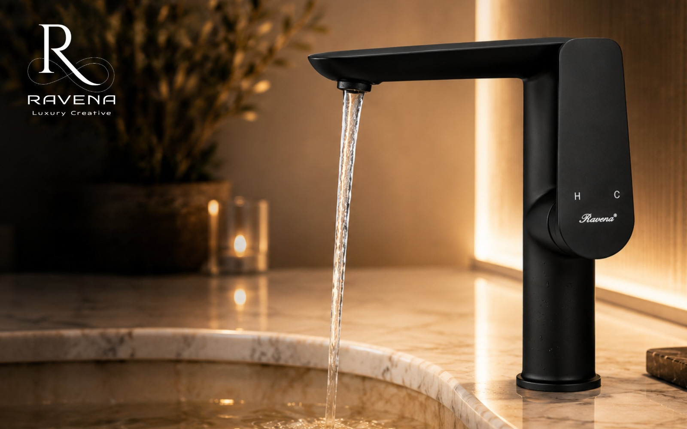
Ravenna is the sanitary ware sub-brand of Al Wakil
Trading Company (alwakil.ae), the leading Emirati company in the field of
building materials and interior decoration. Ravenna was founded to meet the
growing demand for products that combine modern design and high quality.
Ravena bridges the gap between architectural luxury and everyday UAE market
needs, whether you are fitting out a luxury villa in Dubai, a residential
apartment in Sharjah, or a large-scale hotel or commercial project.
Ravenna represents the bridge between architectural
luxury and the needs of the daily market, whether you are furnishing a
villa in Dubai, an apartment in Sharjah, or a large hotel project.
Ravena Products: A Complete Collection for Every Bathroom | Ravena products: a complete collection for every
bathroom
1. Wash Basins | Wash basins
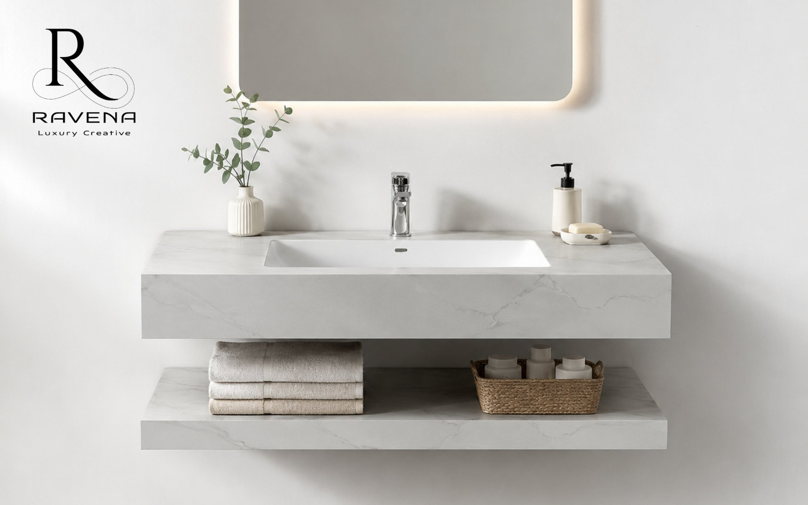
Countertop wash basins with contemporary designs that add a luxurious
touch to any bathroom — Countertop sinks
with contemporary designs add a luxurious feel
Wall-mounted wash basins ideal for smaller bathrooms, creating a sense
of space — Wall-mounted sinks are suitable
for small bathrooms
Integrated counter basins in rectangular, round, and oval shapes —
Sinks built into the counter in rectangular,
circular and oval shapes
2. Toilets & Water Closets | Toilets
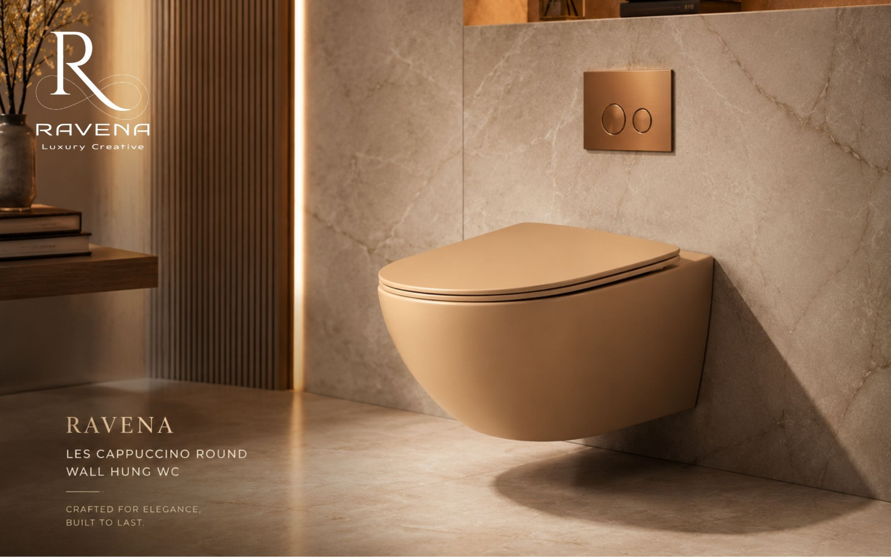
Floor-mounted WCs in classic and modern styles — Floor standing toilets in classic and modern
designs
Wall-hung toilets for easy cleaning and a sleek bathroom look — Hanging toilets provide easy cleaning
Dual-flush systems for responsible water conservation — Double plumbing systems to rationalize water
3. Mixers & Faucets | Mixers and valves
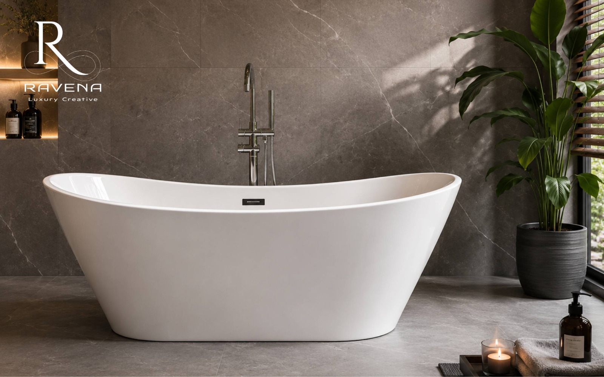
Single and double-handle basin mixers — Single and double handle wash basin mixers
Shower mixers and complete shower units — Shower mixers and integrated bath units
Freestanding faucets for luxury freestanding bathtubs — Free-to-install mixers for luxury bathtubs
4. Bathroom Accessories | Bathroom
accessories
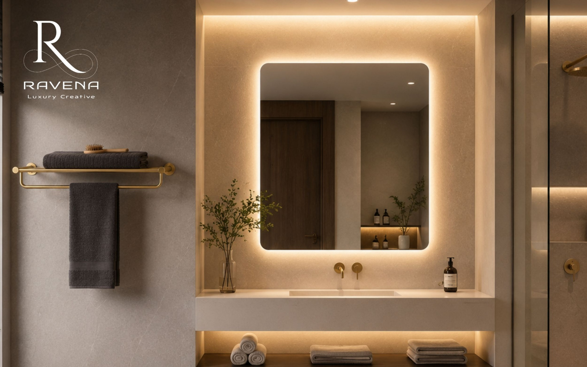
Towel rails and towel rings in stainless steel and chrome finishes —
Stainless steel and chrome towel
holders
Built-in and freestanding soap dispensers — Built-in and freestanding soap dispensers
Smart LED mirrors with anti-fog features — Smart mirrors with LED lighting and steam removal
feature
Storage shelves and vanity units — Stylish
shelves and storage units
Why Choose Ravena from Al Wakil? 6 Compelling Reasons | Why choose Ravenna as an agent? 6 compelling reasons
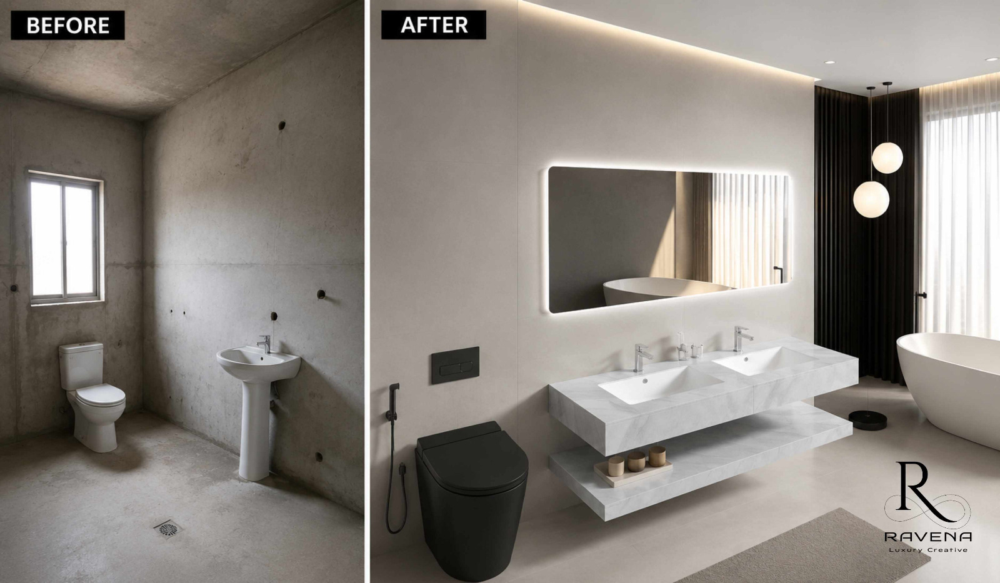
1. Internationally Certified Quality | Quality
certified by international standards
Ravena products are tested to meet European and GCC standards, ensuring
exceptional durability under the UAE's hot and humid climate conditions.
Ravenna products undergo rigorous testing according to
European and Gulf standards, ensuring exceptional durability in the hot and
humid UAE climate.
2. Designs That Follow the Latest Decor Trends | Designs that keep pace with the latest decor trends
Ravena's design team continuously evolves its products to align with global
bathroom design trends, from minimalist to classic luxury.
Ravenna's design team is constantly developing products
to fit global trends, from minimalism to classic luxury.
3. Options for Every Budget | Versatility to suit
every budget
Whether you need a high-quality affordable product or a premium piece for a
hotel project, Ravena offers options to suit all budgets and scales.
Whether you are looking for an economical product or a
high-end piece for a hotel project, Ravenna offers options for all levels.
4. Professional After-Sales Service | Professional
after-sales service
Al Wakil Trading supports you with excellent customer service and spare parts
availability, giving you long-term peace of mind.
The agent company supports you with outstanding customer
service and the availability of spare parts for peace of mind in the long
term.
With Al Wakil's showroom in Sharjah and a distribution network covering
Dubai, Abu Dhabi, and across the UAE, getting your products has never been
easier.
With the agent's showroom in Sharjah and a distribution
network covering Dubai, Abu Dhabi and the rest of the Emirates, obtaining
your products has become easy.
6. Sustainability & Water Conservation | Sustainability and resource rationalization
Ravena adopts water-saving technologies in its toilets and mixers, helping
you reduce your water bill and contribute to environmental protection.
Ravenna adopts water saving technologies in its toilets
and mixers, which helps reduce the water bill and contribute to protecting
the environment.
Ravena for Residential & Commercial Projects | Ravenna in residential and commercial projects
Ravena is the ideal choice for villa and apartment owners in the UAE who want
to transform their bathrooms into elegant spaces. Ravena products can
easily be coordinated with the tiles, marble, and porcelain available at Al Wakil's showroom, giving you a fully
designed bathroom from a single trusted source.
Ravenna is the ideal choice for villa and apartment
owners who want to transform their bathrooms into upscale spaces. Its
products can be easily coordinated with tiles, marble and porcelain
available in the agent’s showroom, to obtain a complete bathroom from one
reliable source.
Hotel & Commercial Projects | Hotel and
commercial projects
Ravena provides bulk solutions for contractors, real estate developers, and
hotel projects that require standardised specifications while maintaining
quality and elegance. The high durability of Ravena products makes them
perfect for intensive use in hotels and commercial complexes.
Ravenna provides wholesale solutions to contractors, real
estate developers and hotels that need standardization while maintaining
quality. The durability of its products makes them ideal for extensive use
in commercial and hotel complexes.
Renovation & Redesign Projects | Renovation
and redesign projects
If you are redesigning an existing bathroom, Ravena offers modern options
suitable for spaces of all sizes. The Al Wakil team in Sharjah will help
you select the most suitable products based on your space and budget.
If you are redesigning your old bathroom, Ravenna offers
modern options for spaces of all sizes. The agent team in Sharjah will help
you choose the most suitable products for your project.
Al Wakil: One-Stop Shop for All Your Interior Needs | Al-Wakeel: An integrated shopping experience under one
roof
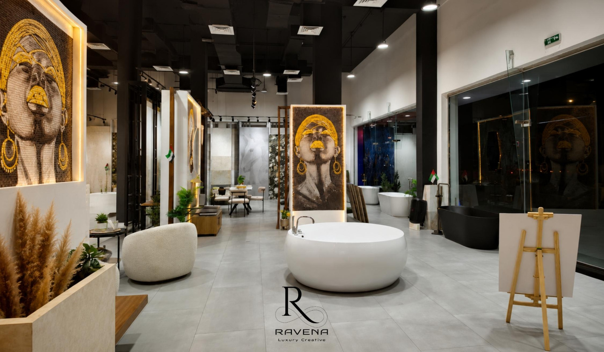
What sets Al Wakil apart from just being a sanitary ware supplier is its
ability to offer a complete solution for all bathroom and interior design
needs under one roof:
What distinguishes the agent is providing a comprehensive
solution for all bathroom and interior decoration needs under one roof:
Porcelain tiles — high-density flooring and wall tiles for indoor and
outdoor use | Porcelain — high-density tiles
for floors and walls
Ceramic tiles — wide range of colours and sizes for every taste and
budget | Ceramics — a wide variety in many
colors and dimensions
Natural and engineered marble — luxurious slabs that add an unmatched
premium touch | Natural and artificial
marble — luxurious slabs for the finest touches
Ravena sanitary ware — complete bathroom products that complete the
aesthetic picture | Ravenna sanitary ware —
integrated sanitary products
Lighting & kitchen systems — modern chandeliers and kitchen cabinet
solutions | Lighting and kitchen systems —
modern chandeliers and kitchen cabinets
This integration saves you time and effort and guarantees complete harmony
across all elements of your project.
This integration saves you time and effort and ensures
complete consistency between all components of your project.
5 Tips for Choosing the Right Sanitary Ware in the UAE | 5 tips for choosing the appropriate sanitary ware in the
UAE
1. Measure Your Space First | Determine the space
first
Measure your bathroom dimensions precisely before choosing basin or toilet
sizes. In smaller bathrooms, wall-hung products help save significant floor
space.
Measure the dimensions of your bathroom before choosing
products. In small bathrooms, hanging products save more space.
2. Prioritise Water and Moisture Resistance | Pay
attention to water resistance
In the UAE's humid climate, always choose mixers and faucets with anti-leak
technology and rust-resistant finishes.
In the UAE's humid climate, choose mixers and valves with
leak-proof and rust-resistant technology.
3. Unify Your Design Style | Unify the design
style
Choose products from the same design line, classic, modern, or minimalist, to
achieve beautiful visual harmony throughout your bathroom.
Choose products from the same design line — classic,
modern, or minimal — to achieve beautiful visual harmony.
Are Ravena Products Available for Wholesale Projects?
Yes, Al Wakil offers special pricing for contractors, real estate developers,
and large commercial projects. Contact the team directly for a customised
quote.
Are Ravena products available for wholesale? Yes, the
agent offers special prices for contractors and developers. Contact the
team for a custom quote.
What Warranty Do Ravena Products Carry?
Ravena products come with a manufacturer's warranty against defects, and Al
Wakil provides after-sales service and spare parts to ensure long-term
performance.
What are the warranties for Ravenna products? It comes
with a warranty against manufacturing defects, and the agent provides
after-sales service and spare parts.
Can I See the Products Before Purchasing?
Absolutely. Al Wakil's showroom in Sharjah welcomes visitors to view products
in person and consult with specialists. You can also enquire via
alwakil.ae.
Can I view the products before purchasing? Yes, Al Wakeel
Showroom in Sharjah welcomes your visits. You can also inquire via
alwakil.ae.
Do You Serve Dubai and Abu Dhabi?
Yes. Al Wakil serves residential and commercial projects across Sharjah,
Dubai, Abu Dhabi, and all UAE emirates.
Do you serve Dubai and Abu Dhabi? Yes, the agent provides
its services across Sharjah, Dubai, Abu Dhabi and the rest of the Emirates.
Conclusion | Bottom line
In a rapidly evolving UAE real estate and construction market, the quality of
your sanitary ware is non-negotiable. Ravena by Al Wakil delivers the
complete answer: premium bathroom products, contemporary designs, certified
quality, and an integrated service, all under one roof in the UAE.
In the evolving UAE market, the quality of sanitary ware
is uncompromising. Ravenna from the agent provides the comprehensive
answer: high-end products, modern designs, certified quality, and
integrated service under one roof.
Whether you are building your dream home, renovating an existing bathroom, or
completing a large commercial development, Al Wakil and Ravena are ready to
serve you.
Whether you are building your dream home, renovating your
bathroom, or completing a commercial project, the agent and Rafina are at
your service.
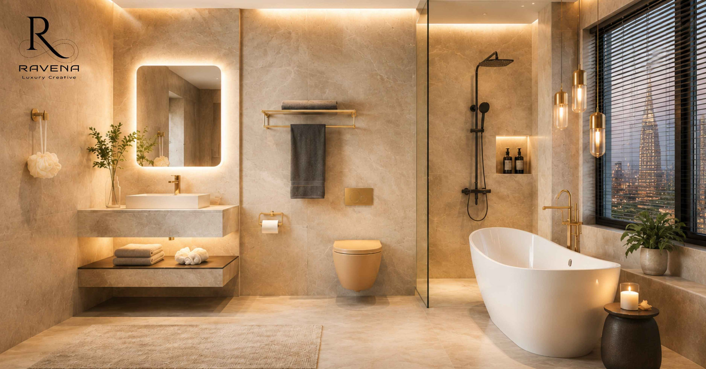
alwakil.ae | Al
Wakil Showroom, Sharjah, UAE | Al
Wakeel Showroom, Sharjah, UAE
Tile Guide UAE
Porcelain vs Ceramic Tiles — Which is Better for UAE Villas?
If you are planning to build or renovate a villa, apartment, or commercial space in the UAE, one of the first questions you will face is this: should you use porcelain tiles or ceramic tiles?
Both types look great. Both are popular in the UAE. But they are very different when it comes to strength, water resistance, price, and the right place to use them.
Al Wakil Building Materials Trading LLC, the UAE's trusted tile and sanitary ware supplier based in Sharjah, has helped hundreds of homeowners, contractors, and designers choose the right tile for their projects. This guide makes the choice simple and clear.
What Are Porcelain Tiles?
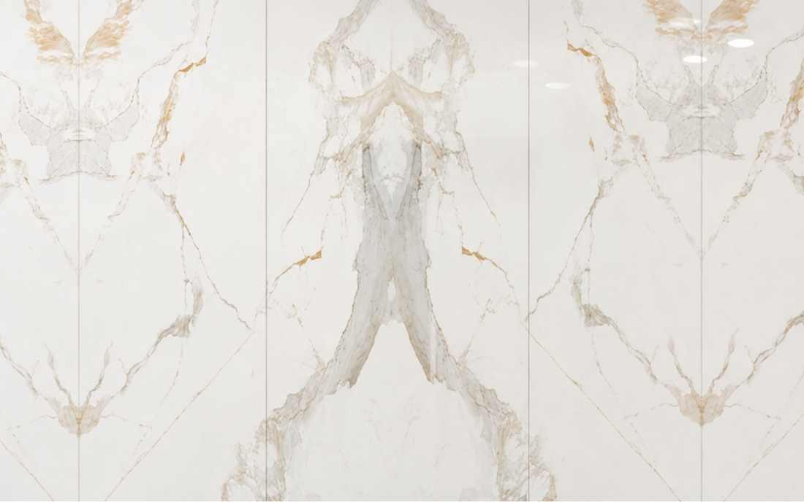
Porcelain tiles are made from a very fine, dense type of clay. They are fired at extremely high temperatures, around 1,200°C. This makes them very hard, very strong, and almost completely waterproof.
Think of porcelain tiles as the heavy-duty option. They can handle heat, heavy foot traffic, moisture, and outdoor conditions, which makes them perfect for the UAE climate.
Common uses of porcelain tiles in the UAE:
Villa entrances and living room floors
Outdoor areas, balconies, and pool surrounds
Hotel lobbies and commercial buildings
Bathrooms and kitchens where water resistance matters
What Are Ceramic Tiles?
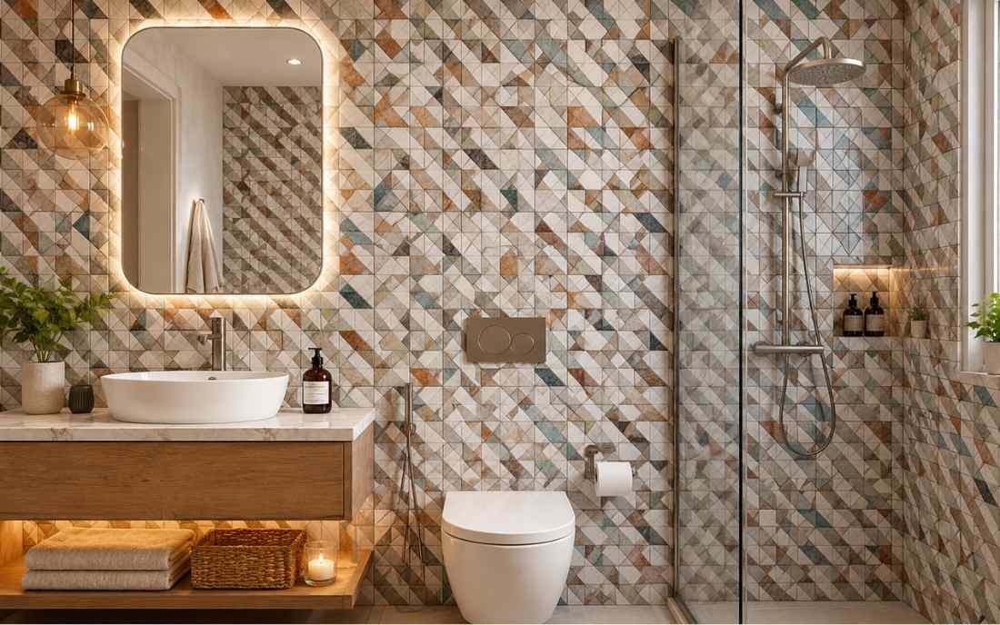
Ceramic tiles are made from natural clay mixed with water, then fired at lower temperatures than porcelain. They are lighter, easier to cut, and generally more affordable.
Ceramic tiles are a great choice for indoor spaces that do not face extreme heat or heavy foot traffic. They come in many colours, patterns, and finishes, making them popular for walls and bathrooms.
Common uses of ceramic tiles in the UAE:
Bathroom walls and floors
Bedroom floors in apartments
Kitchen walls and splash areas
Smaller indoor spaces where budget matters
Porcelain vs Ceramic Tiles — Full Comparison
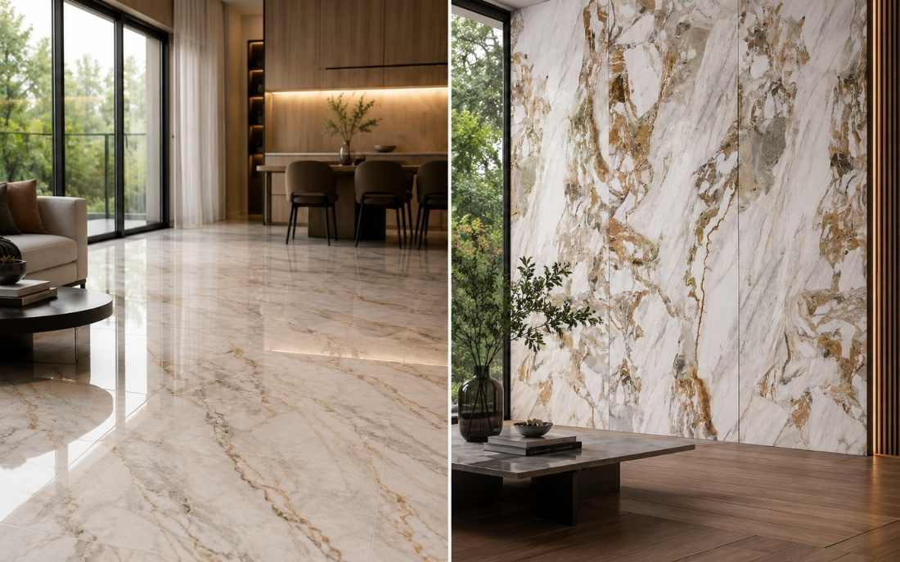
Feature
Porcelain Tiles
Ceramic Tiles
Water Resistance
Very high — almost zero absorption
Moderate — absorbs some water
Durability
Extremely strong, lasts 30-50 years
Good, lasts 15-25 years
Best Used For
Outdoors, high-traffic areas, villas
Bathrooms, bedrooms, low-traffic areas
Surface Finish
Stone, matte, polished, wood-look
Glossy, matte, patterned
Price in UAE
AED 35-120+ per sqm
AED 15-55 per sqm
Weight
Heavier — needs strong base
Lighter — easier to install
Heat Resistance
Excellent — handles UAE summer heat
Good — fine for indoor use
DIY Friendly?
Harder to cut, needs pro installer
Easier to cut and install
Ideal For UAE
Villa floors, outdoor areas, hotel lobbies
Apartment bathrooms, walls, kitchens
Key Differences Between Porcelain and Ceramic Tiles
1. Water Resistance — Porcelain Wins
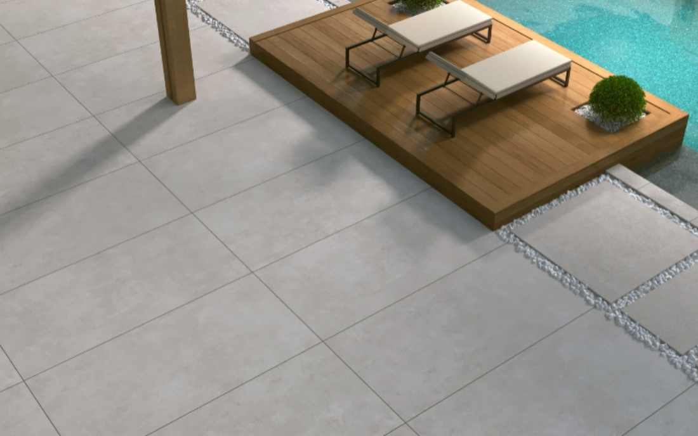
Porcelain tiles absorb less than 0.5% water. In the UAE, where summers are extremely hot and humid, this matters a lot, especially for outdoor areas and bathrooms.
Ceramic tiles absorb around 3% water. This is fine for most indoor use but not ideal for outdoor areas or very wet spaces like pool surrounds.
Al Wakil verdict: For UAE bathrooms, outdoor areas, and villas, porcelain tiles are the safer long-term choice.
2. Durability — Porcelain Lasts Longer
Porcelain tiles are one of the hardest flooring materials available. A well-installed porcelain floor in a UAE villa can last 30 to 50 years.
Ceramic tiles are durable for normal home use but can chip or crack under heavy weight. They typically last 15 to 25 years.
For high-traffic areas like villa entrances, hotel lobbies, or commercial spaces, porcelain is always the better investment.
3. Price — Ceramic is More Budget-Friendly
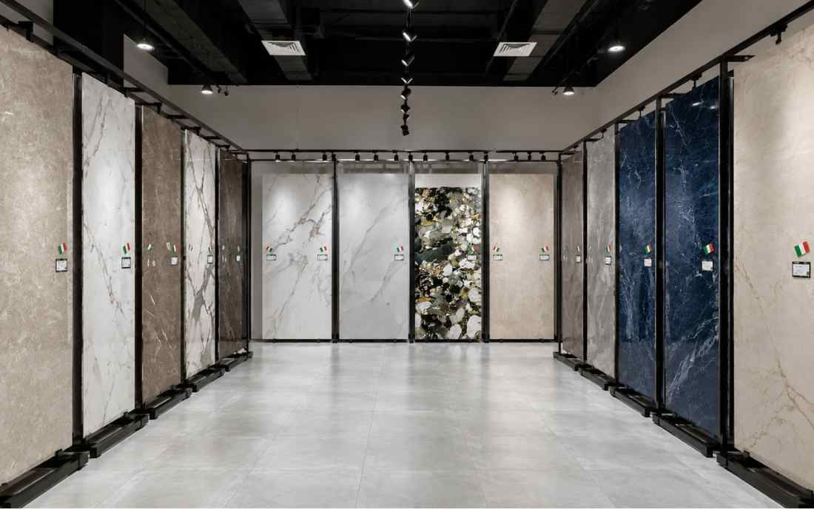
In the UAE market:
Ceramic tiles: AED 15 to AED 55 per square metre
Porcelain tiles: AED 35 to AED 120+ per square metre
For a bedroom or apartment bathroom on a tighter budget, ceramic tiles are a smart choice. For a luxury villa or high-end project, the extra cost of porcelain is worth it.
Al Wakil stocks both options across a wide range of price points at the Sharjah showroom.
Surface temperatures outside in the UAE can reach 60°C in summer. Porcelain tiles handle this very well, and they do not expand or crack under high heat.
Ceramic tiles are fine for indoor use but are not recommended for outdoor areas that get direct sunlight in UAE summers. Over time, extreme heat can cause ceramic tiles to crack.
5. Design — Both Have Beautiful Options
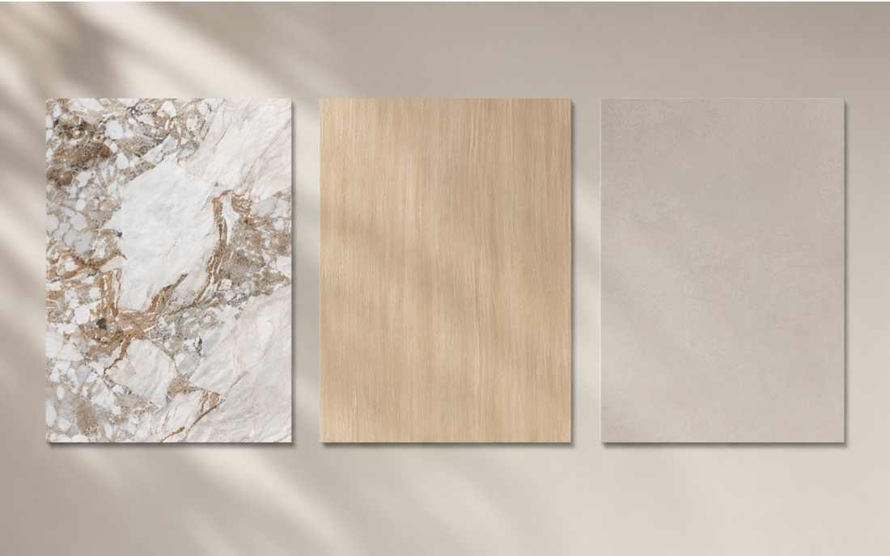
Both porcelain and ceramic tiles come in stunning designs:
Natural stone looks — marble, travertine, granite effects
Wood-effect finishes — very popular in UAE villas
Solid colours, patterns, and geometric designs
Matte, glossy, and textured surface finishes
Al Wakil's showroom in Industrial Area 4, Sharjah carries a wide collection of both, updated regularly with the latest global design trends.
6. Installation — Ceramic is Easier to Handle
Ceramic tiles are lighter and easier to cut. Porcelain tiles are denser and harder to cut, so they need a professional installer with the right tools. Installation cost is slightly higher, but the result is worth it for premium spaces.
Which Tile Should You Choose?
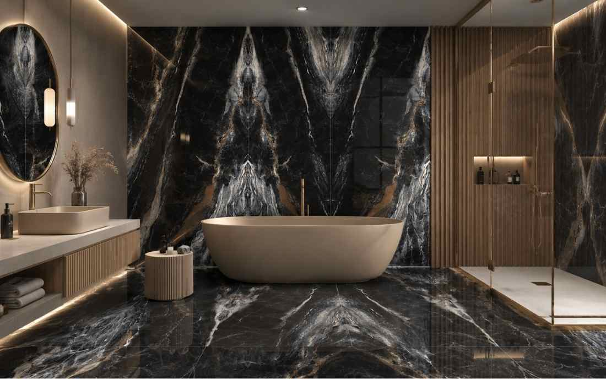
Choose Porcelain Tiles if:
You are tiling outdoor areas, balconies, or pool surrounds in a UAE villa
You are working on a high-traffic area, such as a villa entrance, lobby, or commercial floor
You want tiles that last 30 to 50 years without fading or cracking
Your project is a luxury villa, hotel, or premium commercial development
Choose Ceramic Tiles if:
You are tiling bedroom walls or floors in an apartment
You are working on a bathroom with normal water exposure
Your budget is tighter and the area has low to medium foot traffic
You need tiles for kitchen walls or interior splash areas
Why Buy Your Tiles from Al Wakil?
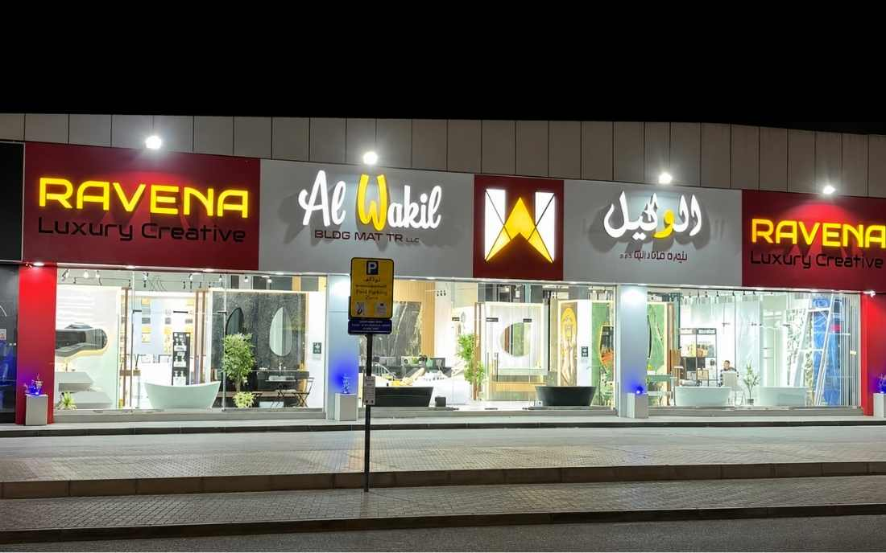
Al Wakil Building Materials Trading LLC is a trusted supplier of porcelain tiles, ceramic tiles, marble, and sanitary ware in the UAE, based in Industrial Area 4, Sharjah, serving homeowners, contractors, interior designers, and developers across Dubai, Sharjah, and Abu Dhabi.
Al Wakil offers:
A wide range of porcelain and ceramic tiles across all price points
Expert in-showroom advice to help choose the right tile for your space
Why Project Material Planning Matters Before Installation
Material planning saves time on site. When sanitary ware, fittings,
accessories, tiles, and special finishes are coordinated early, the
installation team can avoid mismatched items and delays.
For contractors, designers, and developers, a clear product schedule helps
with approvals, procurement, and handover quality. It also keeps the client
experience more predictable.
Al Wakil works with project teams across the UAE to support bulk
requirements, compatible selections, and practical supply coordination.
Interior Details
Kitchen and Utility Finishes Need Practical Beauty
Kitchens and utility areas work hard, so materials should be chosen for
cleaning, moisture resistance, and daily movement as much as visual appeal.
Coordinated sinks, mixers, surfaces, handles, and wall finishes help these
spaces feel connected to the rest of the home or commercial interior.
Al Wakil helps balance durability with style so practical zones still carry
the same premium character as the main interior spaces.